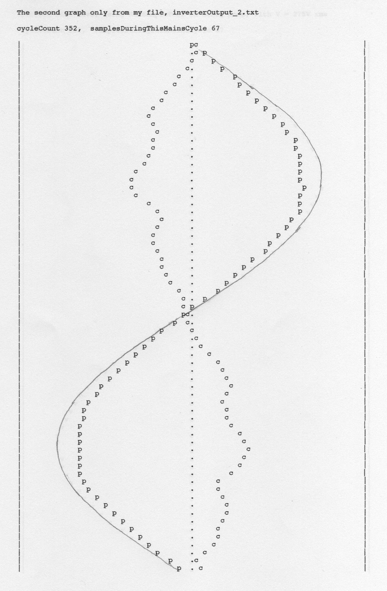
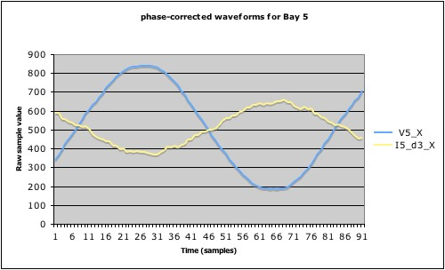

I know it's been said before in these forums that much of the power consumption occurs at the peaks of the cycle due to all those SMPSs found in your typical house these days. I thought I'd share a trace that demonstrates this. The Red trace is a CT wrapped around the output of the PV inverter. The Yellow trace is a CT wrapped around the feed to the street (effectively). Both CTs are "facing the load", so the 180 degree shift shows I'm exporting most of what I produce, but clearly not at the peaks, where I start keeping it for my own use.
I think the Red trace works out at about 5.3A RMS, or about 1300W (there were intermittent clouds and the sun is very low in the northern sky this time of year)
Re: Production Vs Export
On another thread, I recently mentioned that the 'current' waveform from PV inverters did not appear to have been investigated. By this, I was referring to the profile of the 'current' waveform with respect to that of the local mains voltage. If the inverter were to be simply operating as a resistive load of minus X ohms, one would expect the two waveforms to be of similar shape but 180 degrees out of phase.
The limited number of observations that I have done have suggested that this is not the case. Many inverters appears to work a lot harder during the part(s) of the waveform where the voltage is lower than it would be for a true sinusoid. Here is the 'current' waveform (c) from our Nedap inverter alongside the local voltage waveform (p) for comparison:

By superimposing a true sinusoid alongside the voltage waveform, the current can be seen to be greatest where the voltage is low, and vici-versa.
Some inverters appear to work much harder in this regard than others. The wavy sides on the 'c' trace above is not apparent on all inverters. I suspect that the regs for small grid-tied generators have been tightened in recent months/years as the number of such stations has increased. Our Nedap was installed relatively recently in October 2011.
The red trace provided by dbc shows a good high peak at the centre of each half cycle. If this waveform were to be compared with that of the local voltage, I would expect the 'current' peak to have been actively boosted by the action of the inverter.
While spending a few days at the CAT earlier this year, I was able to take similar measurements from various inverters in their PV Barn. For one of these systems, a Uni Lynx, the 'current' could be seen to be consistently boosted near the extreme of each voltage cycle when the voltage was low.

Re: Production Vs Export
Many inverters appears to work a lot harder during the part(s) of the waveform where the voltage is lower than it would be for a true sinusoid.
Maybe that's the secret to why my inverter output looks so good, it's only because my Vgrid looks so good. You admired it once way back in this thread.
Re: Production Vs Export
So I did!